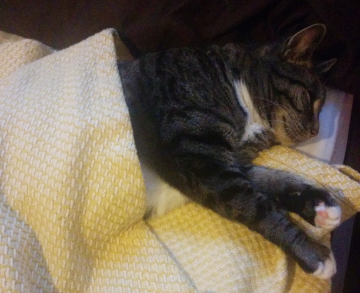

Kirsten Grace's TCOM 320 Assignments
About this page
This page lists all of my assignments in TCOM 320: Principles of Web Design.
Links to Assignments:
Here is an example of a good website and a website that I think needs improvement.
Bonus Fun Picture
This is a picture of my cat, who thinks he is a person, Mittens:

| Quarter | Starting month | Number of weeks |
| Fall | October | 11 |
| Winter | January | 10 |
| Spring | March | 10 |
| Summer | June | 9 |